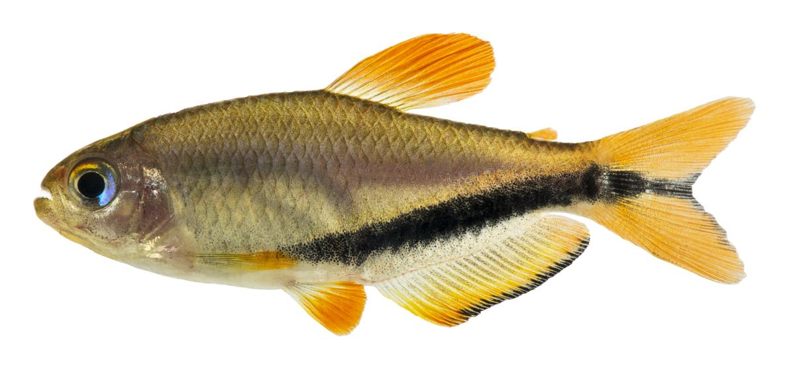

peixes de água doce não bebem água, pq o teor de minerais nos corpos deles eh maior do que no habitat natural deles, então eles só fazem xixi o dia todo. mas peixes de água salgada tomam água porque o teor de minerais em no habitat é maior do que nos corpos deles, então eles bebem água pra estabilizar esses níveis! :O
fonte: minha amiga jo q sabe tudo de peixes
